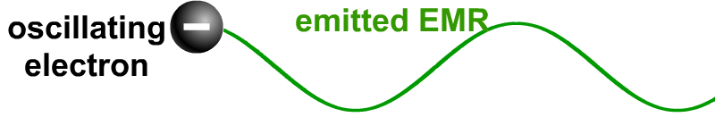
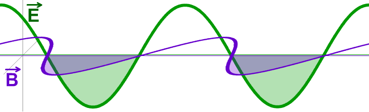

PHYSICS 30
Unit 7: Forces and Fields
Unit Themes and Emphases
- Diversity and Matter
- Nature of Science
- Scientific Inquiry
Focussing Questions
- What roles do electricity and magnetism play in electromagnetic radiation?
- Does electromagnetic radiation have a wave or a particle nature?
- What experimental evidence is required to decide whetherelectromagnetic radiation has a wave or a particle nature?
Unit C: Electromagnetic Radiation
Themes: Diversity and MatterOverview: In this unit, students study the nature and characteristics of electromagnetic radiation (EMR), using the wave and photon models of light.
This unit builds on:
- Science 8, Unit C: Light and Optical Systems
- Physics 20, Unit C: Circular Motion, Work and Energy
- Physics 30, Unit A: Momentum and Impulse and Unit B: Forces and Fields
Focusing Questions:
- What roles do electricity and magnetism play in EMR?
- Does EMR have a wave or a particle nature?
- What experimental evidence is required to decide whether EMR has a wave or a particle nature?
- What technological devices are used today as a result of investigating and applying electromagnetic phenomena?
Students will:
- explain the nature and behaviour of EMR, using the wave model
- explain the photoelectric effect, using the quantum model.
- speed of EMR
- propagation of EMR
- reflection
- refraction
- diffraction
- interference
- total internal reflection
- Snell’s law
- photoelectric effect
- Compton effect
C1 Students will explain the nature and behaviour of EMR, using the wave model.
Specific Outcomes for KnowledgeStudents will:
30–C1.1k describe, qualitatively, how all accelerating charges produce EMR
30–C1.2k compare and contrast the constituents of the electromagnetic spectrum on the basis of frequency and wavelength
30–C1.3k explain the propagation of EMR in terms of perpendicular electric and magnetic fields that are varying with time and travelling away from their source at the speed of light
30–C1.4k explain, qualitatively, various methods of measuring the speed of EMR
30–C1.5k calculate the speed of EMR, given data from a Michelson-type experiment
30–C1.6k describe, quantitatively, the phenomena of reflection and refraction, including total internal reflection
30–C1.7k describe, quantitatively, simple optical systems, consisting of only one component, for both lenses and curved mirrors
30–C1.8k describe, qualitatively, diffraction, interference and polarization
30–C1.9k describe, qualitatively, how the results of Young’s double-slit experiment support the wave model of light
30–C1.10k solve double-slit and diffraction grating problems using:
| λ = | Δxd | this equation works in all cases |
| nl |
| λ = | d × sin θ | this equation only works for small angles, θ < 100 |
| n |
30–C1.11k describe, qualitatively and quantitatively, how refraction supports the wave model of EMR, using:
| sin θ1 | = | n2 | = | v1 | = | λ1 |
| sin θ2 | n θ1 | v2 | λ2 |
30–C1.12k compare and contrast the visible spectra produced by diffraction gratings and triangular prisms.
Specific Outcomes for Science, Technology and Society (STS) (Nature of Science Emphasis)
Students will:
30–C1.1sts explain that scientific knowledge is subject to change as new evidence becomes apparent and as laws and theories are tested and subsequently revised, reinforced or rejected (NS4)
- use examples, such as Poisson’s spot, speed of light in water, sunglasses, photography and liquid crystal diodes, to illustrate how theories evolve
30–C1.2sts explain that scientific knowledge may lead to the development of new technologies, and new technologies may lead to or facilitate scientific discovery (ST4) [ICT F2–4.4]
- describe procedures for measuring the speed of EMR
- investigate the design of greenhouses, cameras, telescopes, solar collectors and fibre optics
- investigate the effects of frequency and wavelength on the growth of plants
- investigate the use of interferometry techniques in the search for extrasolar planets.
Specific Outcomes for Skills (Nature of Science Emphasis)
Initiating and PlanningStudents will:
30–C1.1s formulate questions about observed relationships and plan investigations of questions, ideas, problems and issues
- predict the conditions required for diffraction to be observed (IP–NS3)
- predict the conditions required for total internal reflection to occur (IP–NS3)
- design an experiment to measure the speed of light (IP–NS2).
Performing and Recording Students will:
30–C1.2s conduct investigations into relationships among observable variables and use a broad range of tools and techniques to gather and record data and information
- perform experiments to demonstrate refraction at plane and uniformly curved surfaces (PR–NS2)
- perform an experiment to determine the index of refraction of several different substances (PR–NS2, PR–NS3, PR–NS4)
- conduct an investigation to determine the focal length of a thin lens and of a curved mirror (PR–NS2, PR–NS3, PR–NS4)
- observe the visible spectra formed by diffraction gratings and triangular prisms (PR–NS2)
- perform an experiment to determine the wavelength of a light source in air or in a liquid, using a double-slit or a diffraction grating (PR–NS2, PR–NS3)
- perform an experiment to verify the effects on an interference pattern due to changes in wavelength, slit separation and/or screen distance (PR–NS2, PR–NS3) [ICT C7–4.2].
Analyzing and Interpreting
Students will:
30–C1.3s analyze data and apply mathematical and conceptual models to develop and assess possible solutions
- derive the mathematical representation of the law of refraction from experimental data (AI–NS2) [ICT C7–4.2]
- use ray diagrams to describe an image formed by thin lenses and curved mirrors (AI–NS1)
- demonstrate the relationship among wavelength, slit separation and screen distance, using empirical data and algorithms (AI–NS6)
- determine the wavelength of EMR, using data provided from demonstrations and other sources; e.g., wavelengths of microwaves from the interference patterns of television signals or microwave ovens (AI–NS3, AI–NS4).
Communication and Teamwork
Students will:
30–C1.4s work collaboratively in addressing problems and apply the skills and conventions of science in communicating information and ideas and in assessing results
- select and use appropriate numeric, symbolic, graphical and linguistic modes of representation to communicate findings and conclusions; e.g., draw ray diagrams (CT–NS2).
General Outcome 2
C2 Students will explain the photoelectric effect, using the quantum model.
Specific Outcomes for KnowledgeStudents will:
30–C2.1k define the photon as a quantum of EMR and calculate its energy
30–C2.2k classify the regions of the electromagnetic spectrum by photon energy
30–C2.3k describe the photoelectric effect in terms of the intensity and wavelength or frequency of the incident light and surface material
30–C2.4k describe, quantitatively, photoelectric emission, using concepts related to the conservation of energy
30–C2.5k describe the photoelectric effect as a phenomenon that supports the notion of the wave-particle duality of EMR
30–C2.6k explain, qualitatively and quantitatively, the Compton effect as another example of wave-particle duality, applying the laws of mechanics and of conservation of momentum and energy to photons.
Specific Outcomes for Science, Technology and Society (STS) (Nature of Science Emphasis)
Students will:
30–C2.1sts explain that scientific knowledge and theories develop through hypotheses, the collection of evidence, investigation and the ability to provide explanations (NS2)
- describe how Hertz discovered the photoelectric effect while investigating electromagnetic waves
- describe how Planck used energy quantization to explain blackbody radiation
30–C2.2sts explain that concepts, models and theories are often used in interpreting and explaining observations and in predicting future observations (NS6a)
- investigate and report on the development of early quantum theory
- identify similarities between physicists’ efforts at unifying theories and holistic Aboriginal worldviews
30–C2.3sts explain that the goal of technology is to provide solutions to practical problems (ST1) [ICT F2–4.4]
- analyze, in general terms, the functioning of various technological applications of photons to solve practical problems; e.g., automatic door openers, burglar alarms, light meters, smoke detectors, X-ray examination of welds, crystal structure analysis.
Specific Outcomes for Skills (Nature of Science Emphasis)
Initiating and Planning
Students will:
30–C2.1s formulate questions about observed relationships and plan investigations of questions, ideas, problems and issues
- predict the effect, on photoelectric emissions, of changing the intensity and/or frequency of the incident radiation or material of the photocathode (IP–NS3)
- design an experiment to measure Planck’s constant, using either a photovoltaic cell or a light-emitting diode (LED) (IP–NS2, IP–NS4).
Students will:
30–C2.2s conduct investigations into relationships among observable variables and use a broad range of tools and techniques to gather and record data and information
- perform an experiment to demonstrate the photoelectric effect (PR–NS3) [ICT C6–4.4]
- measure Planck’s constant, using either a photovoltaic cell or an LED (PR–NS2, PR–NS3).
Students will:
30–C2.3s analyze data and apply mathematical and conceptual models to develop and assess possible solutions
- analyze and interpret empirical data from an experiment on the photoelectric effect, using a graph that is either drawn by hand or is computer generated (AI–NS2, AI–NS4) [ICT C6–4.2, C6–4.3].
Students will:
30–C2.4s work collaboratively in addressing problems and apply the skills and conventions of science in communicating information and ideas and in assessing results
- select and use appropriate numeric, symbolic, graphical and linguistic modes of representation to communicate findings and conclusions (CT–NS2).
The following mathematics outcomes are related to the content of Unit C but are not considered prerequisites.
| Concept | Mathematics Course, Strand and Specific Outcome |
|---|---|
| Data Collection and Analysis | Grade 9 Mathematics, Statistics and Probability (Data Analysis), Specific Outcome 3 |
| Measurement and Unit Conversions | Mathematics 10C, Measurement, Specific Outcomes 1 and 2; Mathematics 10-3, Measurement, Specific Outcome 1; Mathematics 20-3, Algebra, Specific Outcome 3 |
| Trigonometry | Mathematics 10C, Measurement, Specific Outcome 4; Mathematics 10-3, Geometry, Specific Outcomes 2 and 4 |
| Rate and Proportions | Mathematics 20-2, Measurement, Specific Outcome 1 |
| Graph Analysis | Mathematics10C, Relations and Functions, Specific Outcomes 1, 4 and 7; Mathematics 20-3, Statistics, Specific Outcome 1 Mathematics 30-1, Relations and Functions, Specific Outcome 14 Mathematics 30-1, Trigonometry, Specific Outcome 4; Mathematics 30-2, Relations and Functions, Specific Outcome 8 |
| Solving Equations | Mathematics 20-1, Algebra and Number, Specific Outcome 6; Mathematics 30-2, Relations and Functions, Specific Outcome 3 |
| Scale Diagrams | Mathematics 20-2, Measurement, Specific Outcome 2; Mathematics 20-3, Geometry, Specific Outcome 2 |
| Slope | Mathematics10C, Relations and Functions, Specific Outcomes 3 and 5; Mathematics 20-3, Algebra, Specific Outcome 2 |
| Powers | Mathematics10C, Algebra and Number, Specific Outcome 3 |
Chapter 13: The wave model can be used to describe the characteristics of electromagnetic radiation
Key Concepts
- speed and propagation of electromagnetic radiation
- reflection, refraction, diffraction, and interference
- total internal reflection and Snell’s Law
Learning Outcomes
- describe how accelerating charges produce EMR
- explain the electric and magnetic fields associated with the propagation of EMR
- explain how the speed of EMR can be investigated and calculated
- describe reflection, refraction, total internal reflection, and simple optical systems
- describe diffraction, interference, and polarization and how this supports the wave model of light
Science, Technology, and Society
- explain that scientific knowledge may lead to the development of new technologies and new technologies may lead to scientific discovery
- explain that scientific knowledge is subject to change as new evidence is found and as laws and theories are tested and subsequently restricted, revised, or reinforced based on new findings and new technologies
Flippity Review Questions for Chapter 13

13.1 What Is Electromagnetic Radiation
Electromagnetic radiation (EMR) - the waves of electromagnetic energy that are radiated by accelerating charges.Electromagnetic spectrum – shows how the frequencies of EMR are broken into general groups based on use and properties. Sections overlap because the properties gradually change as the frequency increases.
| Part of the Spectrum | Source and Uses |
|---|---|
| Low frequency AC | Frequency 60Hz (North America) Weak radiation from AC wires Low energy not dangerous Causes interference in radio reception when passing near high voltage transmission lines. |
| Radio, Radar, TV | Frequency 104 - 1010 Hz oscillations from charges in wires (antennas) Transmission of radio and TV communication signals Ship and aircraft navigation by radar |
| Microwaves | Frequency 109 -1012 Hz Comes from special microwave antennas Long range communications Cooking in microwave ovens |
| Infrared Radiation (IR) | Frequency 1011 - 4×1014 Hz Low energy electron transitions (heat) Causes the direct heating effect Used in remote sensing and thermography |
| Visible Light | Frequency 4×1014 - 8×1014 Hz Higher energy electron transitions EMR that can be detected by the humans (sense of sight) |
| Ultra Violet Light (UV) | Frequency 8×1014 - 1017 Hz Even higher energy electron transitions Causes fluorescene in some materials Causes “tanning” and skin cancer in humans Kills bacteria |
| X-Rays | Frequency 1015 - 1020 Hz High energy electrons emitting energy Can penetrate soft tissues and metals for internal pictures Can cause cancer Can kill healthy cells |
| Gamma rays | Frequency 1019 - 1024 Hz Very high energy electrons and nuclei emitting energy Treatment of localized cancer tumors Very dangerous |
| Cosmic rays | Frequency 102424 + Hz Come from space Used for high energy particle research Very dangerous |
James Clerk Maxwell proposed that a changing electric field produces a changing magnetic field and that the interaction of these fields propagates through space.
Maxwell’s predictions:
- 1. Electromagnetic waves are produced whenever an electric charge is accelerating. Whenever an electric charge oscillates, electrical energy will be lost and an equivalent amount of energy will be radiated outward in the form of oscillating electric and magnetic field
- 2. When the electric charge is accelerated in periodic motion, the frequency of oscillation of the charge will correspond exactly to the frequency of the EMR produced.
 - 3. All EMR will travel at the speed of light 3.00×108 m/s and will obey the universal wave equation c = fλ
- 4. The oscillating electric and magnetic fields will always be perpendicular to each other and perpendicular to the direction of propagation of the wave. 
- 5. Electromagnetic waves should show all the phenomena associated with transverse waves: interference, diffraction, refraction, and polarization.
c = 3.00×108 m/s
13.2 The Speed of Electromagnetic Radiation
During the 1600’s Galileo used a mirror on a distant hill held by an assistant and his pulse to time light. He discovered that he couldn’t get the light source and mirror far enough apart to measure a noticeable time to travel.In 1676 Olaus Roemer and Christiaan Hygens used the moons of Jupiter. From many years of observations they knew exactly how long Io should be behind Jupiter. By measuring the time difference at different positions of Earth’s orbit they were able to calculate a value of 2.3×108 m/s.
Earth’s orbital diameter causes the eclipse of Io to occur at different times because of the extra distance the light must travel when Earth is farthest from Jupiter.
In 1848 Armand Fizeau used a toothed wheel to determine the amount of time light took to travel 8.63 km and back. He determined 3.15×108 m/s. He used a similar apparatus to measure the speed of light through water, which showed that light travels at different velocities in different media.
Fizeau’s original apparatus for measuring the time it takes light to travel the distance (8.63 km) and back
In 1905 Michelson performed a set of experiments using a light, a mirror 35 km away and a multisided rotating mirror. With his experiment he determined a value of 2.98×108 m/s. Today’s accepted value is 3.00×108 m/s.
13.3 Reflection
The Law of ReflectionReflection – when a ray of light bounces off of a shiny surface
The angle of incidence is equal to the angle of reflection.
Image characteristics:
- Type: real or virtual
- Magnification : smaller, same size or larger
- Attitude: erect or inverted
- Position: displacement from the mirror
Magnification Equation
| m = | hi | = | - di |
| ho | do |
Lens maker equation
| 1 | = | 1 | + | 1 |
| f | do | di |
13.4 Refraction
Refraction – a change in the direction of a wave due to a change in its speed as it passes from one medium to another.Refractive index – a ratio comparing the speed of light in a vacuum to the measured speed of light in a given material
| n = | c |
| v |
Snell’s Law of Refraction
The ratio of the sin of the angle of incidence to the angle of refraction is a constant.
The frequency is constant but v and λ change
| sin θ1 | = | n2 | = | v1 | = | λ1 |
| sin θ2 | n1 | v2 | λ2 |
When light passes from a medium with a high refractive index to one with a low refractive index, the light is refracted away from the normal line.
When light passes from a medium with a low refractive index, the light is refracted toward the normal line.
When light goes from a medium with a low refractive index into a medium with a higher refractive index, the light will sometimes reflect internally. Occurs when you take the sin-1 of a value larger than one and the calculator gives you an error.
Critical angle the angle between refraction and total internal reflection when the light is refracted at 90o, along the media boundary.
Each wavelength of light with refract light at a slightly different angle. As a result white light that is refracted will disperse into a spectrum of visible light.
This was demonstrated by Newton with a prism.
Thin Lenses
A thin lens is thin enough that it only redirects light once.
With a fat lens one must calculate the front curve and the back curve of the lens
There are two types of lenses
1. Converging lens is fatter in the middle and the light is directed towards the principle axis.
2. Diverging lens is thinner in the middle and the light is directed away from the principle axis.
13.5 Diffraction and Interference
Huygens’ PrincipleA wave front consists of many small point sources of tiny secondary waves, called wavelets, which propagate outward in a concentric circle at the same speed as the wave itself. The line tangent to all the wavelets constitutes the wave front.
Diffraction grating
A diffraction grating has many 1000’s of slits per cm. It provides a superior interference pattern than a double slit set experiment.
Young’s double slit experiment
| λ = | Δxd | this equation works in all cases |
| nl |
| λ = | d × sin θ | this equation only works for small angles, θ < 100 |
| n |
Polarization
Light waves vibrate in all planes (360o). A polar filter stops all of the vibrations except in one plane. Two filters can be used to block all light.
Program of Studies
Alberta Science 10
Program of Studies

Alberta Science 10
Program of Studies
Contact me:
BCHS Barrhead AB
Steven Montgomery
steven.montgomery@pembinahills.caBCHS Barrhead AB
Textbook
Physics 20 & 20 Textbook (2009)

Physics 20 & 20 Textbook (2009)